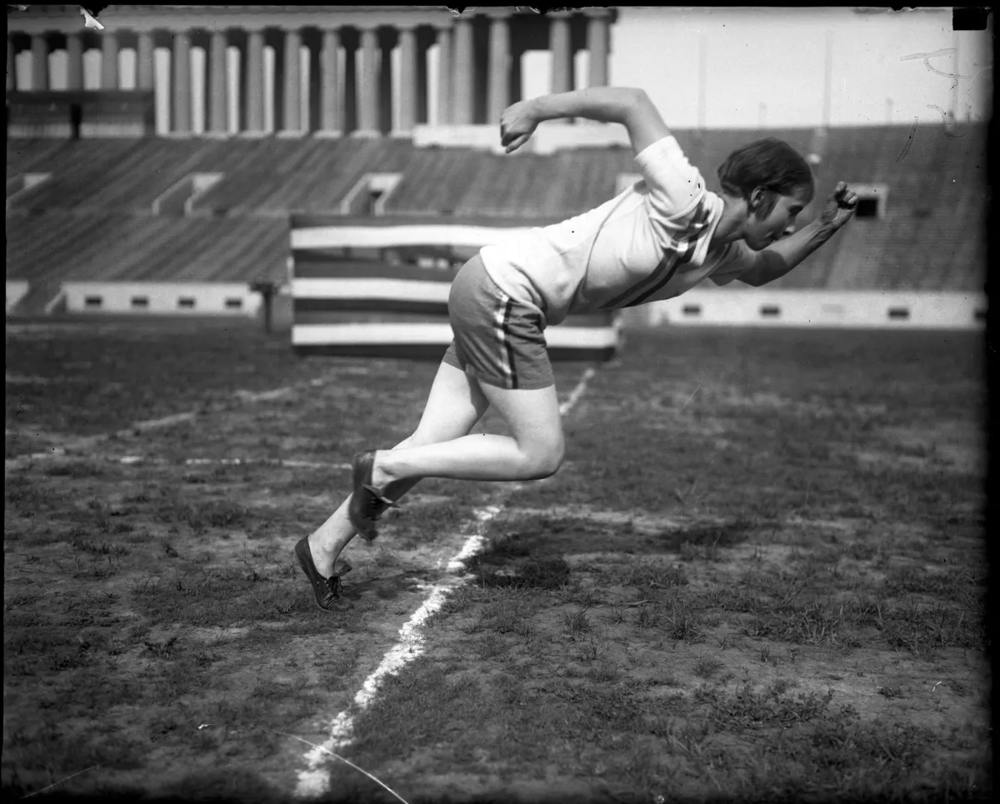

By: Alisa

| Event | Women | Men |
|---|---|---|
| Indoor 400m | 49.26 seconds (Femke Bol) | 44.63 seconds (Michael Johnson) |
| Outdoor 400m | 47.60 seconds (Marita Koch) | 43.03 seconds (Wayde van Niekerk) |
| Indoor 800m | 1:55.82 (Jolanda Čeplak) | 1:43.63 Elliot GILES |
| Outdoor 800m | 1:53.28 (Jarmila Kratochílova) | 1:40.91 (David Rudisha) |
The first Olympics in 776 BC was also the very first track and field competition. Track and field is a combination of many different events including throwing, jumping and running. Although the sport has existed for a very long time, it was only in 1928, when women were allowed to compete in track and field during the Olympics for the first time. Betty Robinson was the first woman to win a gold medal in the 100m event.
